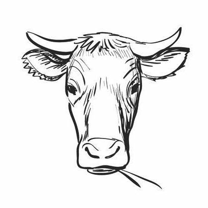
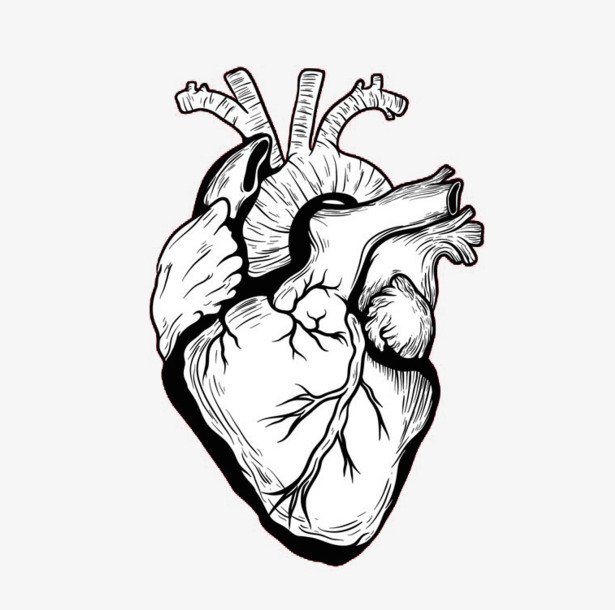

Why vegan?
For the animals
Over 56 billion farm animals are killed every year by humans. Each one is a sentient animal capable of feeling fear and pain. In addition to animals reared for slaughter, dairy cows and hens experience immense suffering during their lifetime. For example, dairy cows are impregnated 4 or 5 times during their lives, and endure the intense emotional distress of having their calf removed from then within 24 hours of birth so that their milk may be harvested for our consumption. Male calves are killed soon after birth and female calves subjected to the same cycle of abuse as their mother. Cows are slaughtered when they are considered 'spent' - usually at age 7-8, despite the fact a wild cow can live up to 25 years. Conversion to veganism by one person can save thousands of animal lives during our lifetime, and stop funding the abuse of animals reared for the dairy and egg industry. We think that's worthwhile.
For the planet
The meat industry is bad news for the planet. Animal agriculture is responsible for more greenhouse gases than all the world’s transportation systems combined. It takes more than 2,400 gallons of water to produce 1 pound of beef, while producing 1 pound of tofu only requires 244 gallons of water. More than 90 percent of all Amazon rainforest land cleared since 1970 is used for grazing livestock. Commercial fishing methods such as bottom trawling and long-lining often clear the ocean floor of all life and destroy coral reefs. The United Nations have now said that a global shift toward a vegan diet is necessary to combat the worst effects of climate change, and a recent study by the University of Oxford concluded that avoiding meat and dairy is the 'single biggest way' to reduce your impact on the planet.
For yourself
Vegan diets are associated with all kinds of health benefits, from lowering your blood sugar to improving kidney function. But, there are loads of benefits to following a vegan diet beyond your health! It can cause you to think more about what you're eating, and get more creative in the kitchen! Changing your diet is a great opportunity to experiment with new foods and new flavours you wouldn't normally try. Plus, you get that warm fuzzy feeling knowing you're doing your bit for the planet and the animals we share it with. All-round win.
If you're considering a change to a vegan diet, we highly recommend making use of all the amazing resources on the internet - for everything from meal prep inspo to 'accidentally vegan food' (hello oreos!). We love this video from Sadia at Pick Up Limes, talking through her top tips for going vegan!